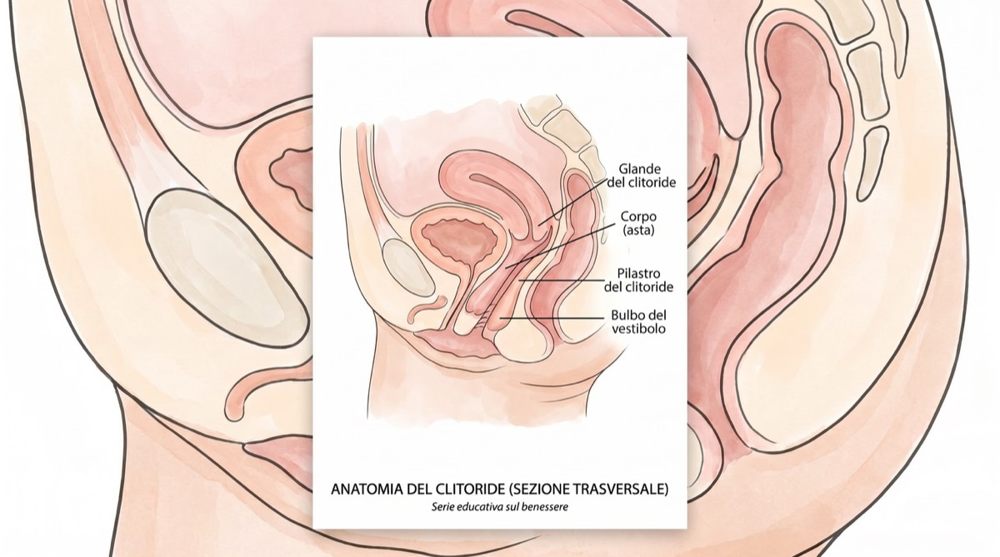
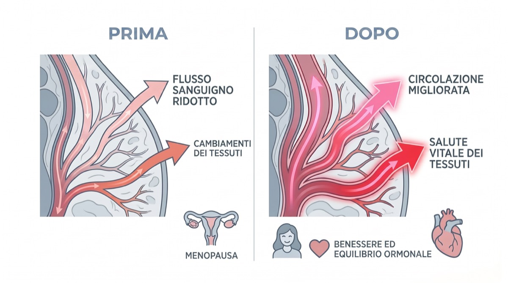

Perché ne stiamo parlando
Quando la nostra redazione ha sentito parlare per la prima volta di un «dispositivo wellness a forma di limone» che stava conquistando la community della menopausa, dobbiamo ammetterlo: eravamo scettiche. Ma dopo aver intervistato decine di donne, consultato dei ginecologi e sì, averlo provato in prima persona, capiamo l'entusiasmo.
Non è l'ennesima moda del benessere. Affronta un problema medico reale che riguarda milioni di donne, ma di cui quasi nessuno parla: l'atrofia clitoridea e la perdita del benessere sessuale durante la menopausa.
Il discorso di cui nessuno ci ha avvertite
Ci raccontano tutto sulle vampate che alle 3 del mattino ci lasciano sudate fra le lenzuola di seta. Ci parlano della confusione mentale che ci fa cercare gli occhiali mentre li abbiamo sul naso.
Ma nessuno ti fa sedere con un calice di Pinot e ti sussurra: «Ehi, tra l'altro, se non tieni le cose attive là sotto, il clitoride può davvero rimpicciolirsi.»
Si chiama atrofia clitoridea e fa parte della sindrome genito-urinaria della menopausa (GSM) – una condizione che, secondo la North American Menopause Society, colpisce fino al 50% delle donne in post-menopausa.
«Il grande distacco»
Per molte donne che abbiamo intervistato non era solo secchezza. Era l'insensibilità. Una tester ha raccontato di aver provato a usare il suo vecchio vibratore dei trent'anni: «Invece di farmi sentire bene, era solo… inadeguato. O insensibile. Come provare a fare il solletico a un ginocchio.»
Gli esperti spiegano che i vibratori tradizionali agiscono per attrito e pressione. Quando i tessuti si assottigliano per via dei bassi livelli di estrogeni, la vibrazione diretta può addirittura desensibilizzare ulteriormente i nervi, portando proprio a quella sensazione di «insensibilità».
«Basta vibrazione, sì alla pressione.»
– Specialisti del pavimento pelvico
I ginecologi specializzati nella cura della menopausa spiegano: «Quando gli estrogeni calano, diminuisce l'afflusso di sangue alla zona pelvica. Questo porta all'assottigliamento dei tessuti, alla perdita di elasticità e a una sensibilità ridotta. In medicina lo chiamiamo il principio del "usa o perdi": serve un afflusso di sangue costante per mantenere i tessuti in salute.»
Ecco a te: il Nancy's Lem
Ed è qui che entra in gioco questo piccolo dispositivo giallo. Il Nancy's Lem non viene presentato come un sex toy, ma come un dispositivo wellness. E dopo la nostra ricerca, capiamo anche perché.
A differenza dei vibratori tradizionali, che si basano sull'attrito (e possono irritare i tessuti assottigliati dalla menopausa), il Lem usa la cosiddetta tecnologia a onde di pressione. Immagina la differenza tra strofinare carta vetrata sulla pelle e lasciarsi avvolgere da un delicato massaggio.
La scienza: perché la tecnologia a onde di pressione funziona
❌ Vibratori tradizionali:
Si basano sull'attrito di superficie, che può irritare i tessuti sensibili e assottigliati. Può causare insensibilità o micro-lacerazioni.
✓ Tecnologia a onde di pressione:
Crea delicate onde di aspirazione senza contatto diretto. Richiama nei tessuti sangue ricco di ossigeno, favorendo salute e sensibilità.
Ecco come funziona: il Lem crea una delicata aderenza attorno al clitoride e lo stimola con onde di pressione – una sensazione simile al sesso orale, ma costante e instancabile. E poiché non c'è alcuno sfregamento, non c'è la minima irritazione.
Ma la vera magia sta nella fisica: quella delicata aspirazione crea un effetto sottovuoto che richiama fisicamente sangue profondo e ricco di ossigeno nei tessuti. Risveglia nervi rimasti dormienti per anni.
«Sembra che tiri fuori l'orgasmo direttamente… e fa durare la pulsazione molto più a lungo.»
– Alisha, beta tester (da recensioni clienti verificate)
Come se la cava: il nostro confronto
Abbiamo confrontato il Lem con le soluzioni tradizionali per la salute dei tessuti in menopausa
| Caratteristica | Nancy's Lem | Vibratore tradizionale | Crema agli estrogeni |
|---|---|---|---|
| Funziona sui tessuti sensibili | ✅ Sì | ❌ Può irritare | ⚠️ Risultati lenti |
| Aumenta l'afflusso di sangue | ✅ Tessuti profondi | ⚠️ Solo in superficie | ✅ Graduale |
| Niente attrito/irritazione | ✅ Zero contatto | ❌ Provoca attrito | ✅ Sì |
| Piacere immediato | ✅ Istantaneo | ⚠️ Variabile | ❌ Nessun piacere |
| Design discreto | ✅ Sembra un limone | ❌ Evidente | ✅ Sì |
| Consigliato dai medici | ✅ Per l'afflusso di sangue | ⚠️ A volte | ✅ Sì |
| Prezzo | € 77,95 (una tantum) | € 45–135 | € 28–45 al mese |
La filosofia di design «anti-vergogna»
Una cosa ha colpito la nostra redazione durante i test: il design è volutamente discreto. È giallo acceso, sta nel palmo della mano e sembra davvero un limone decorativo.
Il «test del comodino»

Tutte abbiamo quel cassetto. Un nascondiglio. Dove nascondiamo, sotto i calzini vecchi, quei dispositivi di plastica antiestetici e fallici.
Una delle nostre tester ci ha raccontato questo episodio: «Avevo dimenticato il Lem sul mobile del bagno proprio mentre era da noi mia suocera. Lo ha preso in mano e ha detto: "Oh, è uno di quei nuovi spazzolini sonici per il viso? Com'è morbido!"»
Supera il test del comodino. Sembra tecnologia di self-care di fascia alta, non un sex toy. Perché è esattamente quello che è.
⚠️ Attenzione alle imitazioni economiche
Dopo aver pubblicato la nostra prima recensione, le lettrici ci hanno chiesto perché non comprare la versione da pochi euro su Amazon. Ecco cosa dicono gli esperti.
«I toy economici usano materiali porosi in Jelly o TPE», ha avvertito. «I batteri microscopici restano intrappolati nei pori, un rischio enorme proprio per le donne in menopausa, già più soggette alle infezioni delle vie urinarie.»
Il Lem di Hello Nancy è in silicone medicale al 100%, non poroso. Non rischiare la tua salute per risparmiare pochi euro.
Silenziosissimo
Motore ultrasilenzioso per la massima discrezione
Impermeabile (IPX7)
Perfetto da usare nella vasca o sotto la doccia
Silicone medicale
Sicuro per la pelle, non poroso, facile da pulire
Ricarica magnetica
120 minuti per ogni ricarica
Galleria prodotto
L'unboxing: la prima impressione conta

Una delle prime cose che le nostre tester hanno notato? La confezione è elegante. Niente colori sgargianti, nessuna immagine imbarazzante. La scatola è di un bianco minimal con discreti dettagli dorati – la si potrebbe tranquillamente scambiare per un prodotto skincare di lusso.
Cosa c'è nella scatola:
- Il dispositivo Lem (giallo acceso, grande quanto il palmo)
- Cavo di ricarica USB magnetico
- Morbida custodia in velluto (perfetta per viaggiare)
- «Manuale dell'amore per sé» con consigli d'uso e suggerimenti di benessere
- Guida rapida con istruzioni illustrate
«Quando ho aperto la scatola, mi ha davvero sorpresa quanto tutto sembrasse premium. Non sembrava un sex toy: sembrava un investimento nel benessere.» – Tester, 54 anni
Parliamo di anatomia: perché la stimolazione clitoridea conta

La scienza del piacere
Quello che ogni donna dovrebbe sapere del proprio corpo
Ecco una cosa che a scuola non insegnano: il clitoride ha circa 8.000 terminazioni nervose – più di qualsiasi altra parte del corpo umano, sia femminile che maschile. Per dare un'idea: il pene ne ha circa 4.000.
Ma c'è un però: il 75% delle donne non riesce a raggiungere l'orgasmo con la sola penetrazione, secondo una ricerca pubblicata sul Journal of Sex & Marital Therapy. La chiave è il clitoride.
Cosa succede durante la menopausa:

❌ Il problema:
- • I livelli di estrogeni calano del 90%
- • L'afflusso di sangue alla zona pelvica diminuisce
- • Il tessuto clitorideo può ridursi del 20–30%
- • La sensibilità nervosa si attenua
- • La lubrificazione naturale diminuisce
✓ La soluzione:
- • Una stimolazione regolare mantiene l'afflusso di sangue
- • Tiene attive le vie nervose
- • Previene l'atrofia dei tessuti
- • Mantiene la sensibilità
- • Favorisce la lubrificazione naturale
I ginecologi lo dicono senza giri di parole: «Pensalo come un allenamento per il pavimento pelvico. Se non usi quei muscoli e non mantieni l'afflusso di sangue, si atrofizzano. Per il tessuto clitorideo vale esattamente lo stesso principio.»
💡 In sintesi:
Una stimolazione clitoridea regolare non riguarda solo il piacere (anche se è un bel bonus). Riguarda mantenere i tessuti in salute, preservare la funzione nervosa e prevenire i cambiamenti irreversibili che arrivano con la trascuratezza. È vera prevenzione.
«Ma il mio partner?» Ce lo siamo chieste anche noi
Il «miracolo in 3 minuti» (e perché i partner lo adorano)
Diciamocelo: per molte donne over 50 possono volerci anche 20 minuti (e parecchie acrobazie mentali) per arrivare anche solo vicino all'orgasmo. Con il Lem? Tre minuti.
L'obiezione più grande che hanno le donne: «Il mio partner si sentirà sostituito?»
Assolutamente no. Il Lem è piccolissimo. Molte coppie lo usano persino durante il rapporto. Fa da «ponte»: ti assicura di essere pienamente eccitata e naturalmente lubrificata, e toglie al partner l'ansia di dover «essere all'altezza».
Una tester ci ha detto: «Ha trasformato la nostra camera da letto da un luogo di ansia di nuovo in un parco giochi.»
Una delle domande più frequenti che abbiamo ricevuto durante la nostra ricerca: «Il mio partner si sentirà minacciato?»
Ecco cosa abbiamo scoperto: il Lem non è un sostituto, è un di più. Molte coppie che abbiamo intervistato hanno riferito che integrare il Lem nei loro momenti intimi ha addirittura migliorato il loro legame.
«Mio marito era curioso, non si è sentito minacciato. Ora durante i preliminari lo usa lui su di me. A lui toglie l'ansia di dover "essere all'altezza" e io ricevo esattamente quello di cui ho bisogno. Ci guadagniamo entrambi.»
– Valeria, 55 anni, sposata da 28 anni
Le dimensioni compatte lo rendono facile da integrare nei momenti di coppia, senza risultare ingombrante. E poiché, una volta posizionato, funziona a mani libere, entrambi potete concentrarvi l'uno sull'altra.
Come le coppie usano il Lem:
Durante i preliminari
Il partner lo tiene in posizione mentre bacia e accarezza
Durante il rapporto
Posizionato per una stimolazione clitoridea e penetrativa simultanea
In solitaria, con il partner che guarda
Crea intimità e aiuta i partner a capire cosa funziona
«Manutenzione» tra una volta e l'altra
L'uso in solitaria mantiene i tessuti in salute quando il sesso di coppia non è frequente
Consiglio extra: la comunicazione è tutto. Presentalo come uno strumento di benessere che fa bene a entrambi, perché riduce la pressione e aumenta il piacere.
Ogni motivo per provarci, nessuno per preoccuparti
Abbiamo esaminato le garanzie di Hello Nancy. Ecco cosa significano davvero.
«Garanzia di piacere» di 30 giorni
Non sei soddisfatta? Ti rimborsano l'intero importo – senza neanche dover restituire il prodotto. Si fidano della tua onestà. Tanto sono sicuri.
In pratica: zero rischio economico. Provalo per un mese.
Garanzia di 12 mesi
Se nel primo anno qualcosa non va con il dispositivo, te lo sostituiscono. Gratis. Senza fare domande.
In pratica: non è un gadget usa e getta. È fatto per durare.
Assistenza a vita
Domande sull'uso? Dubbi sulla pulizia? Il team di assistenza clienti risponde entro 24 ore.
In pratica: non stai comprando un prodotto. Stai entrando in una community.
La vera domanda: cos'hai da perdere?
Ti abbiamo spiegato la scienza. Ti abbiamo mostrato le recensioni. Ti abbiamo illustrato le garanzie. A questo punto, l'unico rischio è non provarlo.
Facciamo due conti:
Se lo provi:
- ✓ Potresti riscoprire un piacere che credevi perduto
- ✓ Potresti migliorare la salute dei tessuti e prevenire l'atrofia
- ✓ Potresti dormire meglio (gli orgasmi rilasciano ossitocina)
- ✓ Nel peggiore dei casi: riavrai i tuoi € 77,95
Se non lo fai:
- • L'atrofia dei tessuti continua
- • La sensibilità nervosa continua a calare
- • Il benessere sessuale resta una lotta
- • Ti chiederai sempre «e se…?»
Perché Hello Nancy ha la nostra fiducia
Non consigliamo prodotti alla leggera. Ecco perché Hello Nancy ha superato i nostri standard editoriali.
Premiato
2025 Women's Wellness Tech Award dell'International Wellness Institute
Recensioni verificate
4,8★ di media da 18.217 acquirenti verificate (niente recensioni false)
Venduto in tutto il mondo
Venduto in tutto il mondo dal lancio nel 2023
Silicone medicale
Silicone medicale, rigorosi test di sicurezza